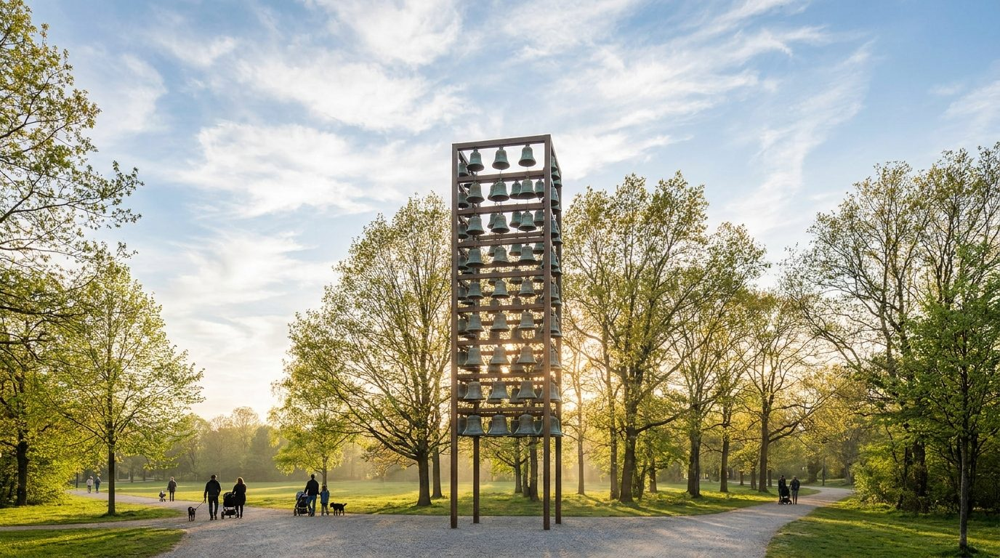
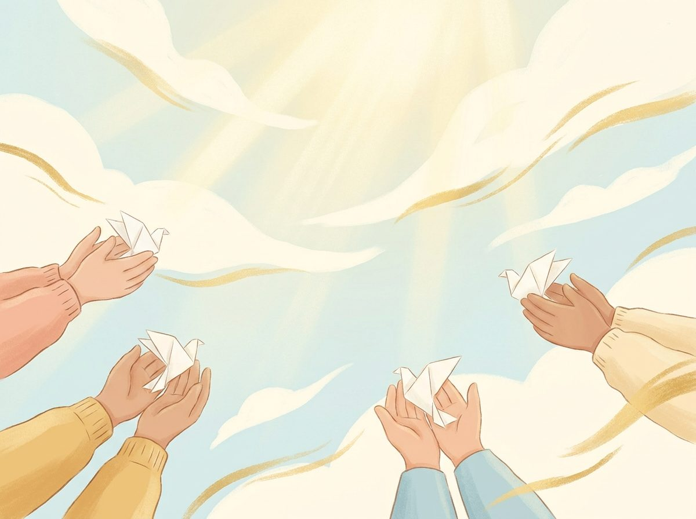
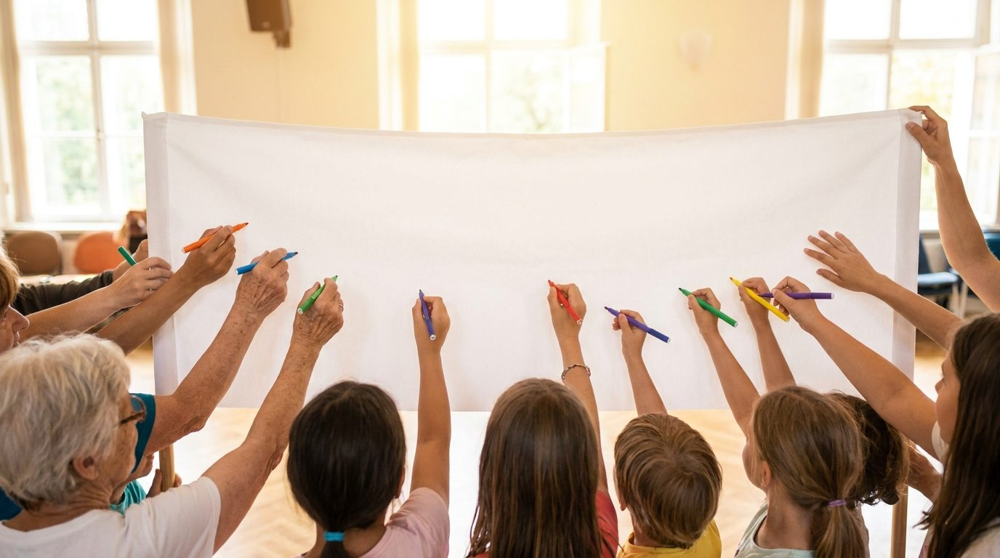
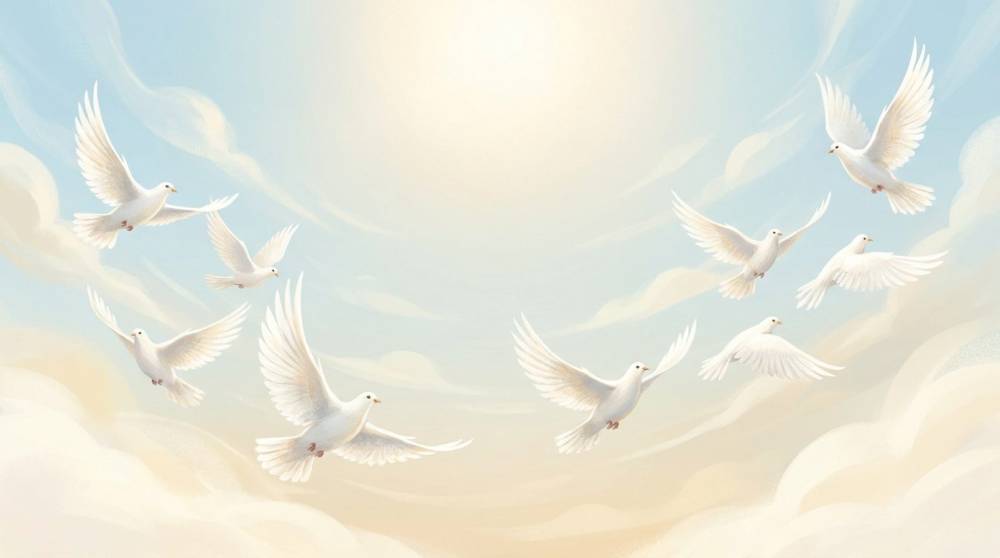

Камбанен звън огласява мира
Национална инициатива за детско творчество и мир, с наднационално участие, посветена на Международния ден на мира — 21 септември.
Мисията на програмата
Програмата е практическо проявление на мисията на Фондация „Камбани за мир". Тя свързва стратегическите стълбове на фондацията в един видим модел за действие: национална мрежа, наднационална мрежа, образование, култура и творчество, общности, партньорства и вдъхновение.
Чрез „Камбанен звън огласява мира" фондацията изгражда първата устойчива публична форма на своята жива екосистема за мир. Тя поставя основата на националната мрежа за мир и едновременно с това отваря вратите към наднационално участие чрез български и други общности, училища, партньори и приятели на каузата извън страната.

Парк-комплекс „Камбаните", СофияСедем основни принципа
Надполитическа
Отворена за всички, без политическа обвързаност.
Мирна
Послание на спокойствие, диалог и доброта.
Обединяваща
Събира хора от различни среди около общ избор.
Културна
Изразена чрез изкуство, музика и творчество.
Детска
Поставя детския глас и опит в центъра.
Обществена
Включва училища, общини, читалища и граждани.
Отворена към международно участие
Покана към партньори и общности по целия свят.
Един миг тишина. Един общ звън.
Минута тишина за мир
Всички участници спират за миг — едно общо мълчаливо послание към света.
Камбанен звън огласява мира
Камбани звънят едновременно от много места — единен звук, единно послание.
Най-важното не е мащабът, а смисълът — отворена рамка, в която всяко училище, община, читалище или общност може да организира своя изява за мир.
Първите стъпки на инициативата
„Камбанен звън огласява мира" не започва само като бъдещо събитие на 21 септември 2026 г. Инициативата вече има своите първи живи стъпки — символни срещи, пилотни събития и първа публична изява, които постепенно очертаха нейния дух, посока и обществен смисъл.
Първи пилотен звън на Будителите
В парк-комплекс „Камбаните" се проведе първото пилотно събитие, което постави началото на живото разгръщане на идеята. Този ден носеше силна символика — връзка между будителството, детството, паметта, камбанния звън и вътрешния избор за мир.
Детски звън за мир
Отново в парк-комплекс „Камбаните" се проведе второ пилотно събитие, посветено на децата като естествени носители на посланието за мир. Тази среща потвърди, че детското присъствие, радостта, творчеството и камбанният звън могат да се превърнат в жив език на инициативата.
Първа публична изява: „Гласът на децата за мир"
Проведе се първата публична изява на националната инициатива — концертът „Гласът на децата за мир – Мирът е нашият избор". Събитието събра деца, творци, родители, партньори и съмишленици около посланието, че мирът не е абстрактна дума, а жив избор, който може да бъде изразен чрез песен, слово, движение, рисунка и общо присъствие. Инициативата получи първия си сценичен и обществен израз чрез детски изпълнения, творчески послания, символен камбанен звън и „Бяло платно за мир".
Национално разгръщане
Централното събитие в парк-комплекс „Камбаните", София — минута тишина, общ камбанен звън и широко национално и наднационално участие на училища, общини, културни пространства, общности и партньори.
Седмица ЗА МИР 2026
Отворена обществена рамка, в която училища, общини, културни институции, читалища, граждански общности и семейства могат да създадат свои инициативи за мир.
Най-важното не е мащабът, а смисълът
Седмица ЗА МИР дава свобода на всяка общност да избере своята форма на участие. Целта е да покажем, че изборът за мир се проявява в ежедневието ни.

Седмица ЗА МИР
„Мирът е моят избор"Бяло платно за мир
Бялото платно е прост, видим и силен жест на лично свидетелство.
Когато едно дете напише със собствената си ръка „Мирът е моят избор“, то заявява своята лична позиция, присъствие и вътрешен глас.
Централно събитие на „Камбаните"
В Международния ден на мира се събираме в парк-комплекс „Камбаните" в София за общ глас за мир.
Програмата включва: минута тишина в 11:59 ч., общ камбанен звън в 12:00 ч., изпълнения на детски и младежки състави, рисуване върху „Бяло платно за мир“ и среща на съмишленици, творци и партньори.

Мир отвъд границиУчастие от чужбина
Български и други общности, училища зад граница, културни центрове и приятели на България могат да се включат от всяка точка на света.
Когато деца от различни страни изпишат „Мирът е моят избор“, между тях се изгражда невидим мост на надеждата и съпричастността.
Основни послания
„Всяко дете е жива камбана за мир."
„Мирът е моят избор."
„Мирът е нашият избор."
„От всички нас зависи да превърнем мира в реалност."
Символите на инициативата
Камбанен звън
Общ звуков знак за мир, който свързва различни места и общности.
Минута тишина
Момент на вътрешно събиране, уважение и споделено намерение.
Бяло платно за мир
Отворен творчески формат, в който деца и възрастни изписват или рисуват свои послания за мир.
Мирът е моят избор
Лично послание и лична отговорност.
Мирът е нашият избор
Общностно послание и споделено действие.
Всяко дете е жива камбана за мир
Символният център на детското участие.
Историята зад инициативата
„Възраждане"
Има места, които носят памет. Има звуци, които събуждат сърцето. Има деца, които ни напомнят защо мирът не е абстрактна дума, а жив избор.
Идеята за „Камбанен звън огласява мира" се ражда от срещата между тишината на едно историческо място и гласовете на децата, които вярват, че светът може да бъде по-добър — стига всеки да направи своя избор.
 „Възраждане"
„Възраждане"
Как да се включите
Училище / детска градина
Организирайте ден или час за мир, послания, рисунки, камбанен звън, бяло платно или участие в Седмица ЗА МИР.
Читалище / културна организация
Създайте концерт, изложба, работилница, четене на детски послания или общностно събитие.
Община / институция
Подкрепете местни инициативи, публично пространство, училища, културни центрове и граждани.
Общност или партньор от чужбина
Организирайте символично включване с послание, платно, звън, снимки или видео.
Гражданин, творец или доброволец
Споделете инициативата, дарете присъствие, идея или подкрепа с организация, контакт или добра воля.
Подкрепете инициативата
Мирът има нужда от хора, които действат. Вашата подкрепа помага на каузата да расте.
„Подкрепата не е само финансова. Понякога един контакт, една отворена врата, едно писмо, едно платно, едно споделяне или присъствие могат да бъдат решаващи.“
Материална помощ
Подкрепете ни с материали за бели платна, печат или транспорт.
Регистрирайте своето събитие за мир
Всяко училище, детска градина, община, културна организация, общност или партньор може да даде свой жив израз на посланието „Мирът е нашият избор." Формата е кратка и удобна — и на мобилен телефон.
Къде вече звъни мирът?
След регистрация инициативите ще бъдат отбелязвани на карта, за да се вижда как мрежата за мир расте в България и отвъд граници.
Нека добрата новина стигне по-далеч
„Камбанен звън огласява мира“ е инициатива с културен, образователен и наднационален смисъл.
Каним медии, подкасти, телевизии, радиа и онлайн платформи да разкажат за децата, посланията и събитията по места.
Често задавани въпроси
Кой може да се включи?
Всеки — училища, детски градини, читалища, общини, културни организации, семейства, граждани, доброволци, творци, медии и партньори от България и отвъд граници.
Нужно ли е събитието да бъде голямо?
Не. Най-важното не е мащабът, а смисълът — малка изява в едно училище има същата стойност като голямо събитие.
Какво е Бялото платно?
Прост, видим и силен жест — деца, ученици, учители, родители, творци и граждани пишат или рисуват върху бяло платно посланието „Мирът е моят избор."
Може ли да се участва от чужбина?
Да. Български и други общности, училища, културни центрове и партньори могат да се включат от всяка точка на света — вижте Участие от чужбина.
Инициативата политическа ли е?
Не. Инициативата е надполитическа и отворена за всички, без политическа обвързаност.
Какво означава „Всяко дете е жива камбана за мир"?
Символният център на детското участие — децата като естествени носители на гласа за мир, чрез послания, рисунки, песни и живо присъствие.
Как мога да помогна?
Подкрепата не е само финансова — един контакт, едно писмо, едно платно или едно споделяне могат да бъдат решаващи. Вижте начините за подкрепа.
Как да регистрирам събитие?
Чрез формата на страницата Регистрирай събитие — отнема само няколко минути.
Нека България зазвучи за мир
На 21 септември 2026 г. ще застанем заедно — деца, родители, учители, творци, институции, общности, граждани и приятели на инициативата отвъд граници.
Ще замълчим за миг. Ще чуем тишината. После ще прозвучи камбанен звън.
И върху бели платна деца и възрастни ще напишат със собствената си ръка: Мирът е моят избор.
Мирът е нашият избор.